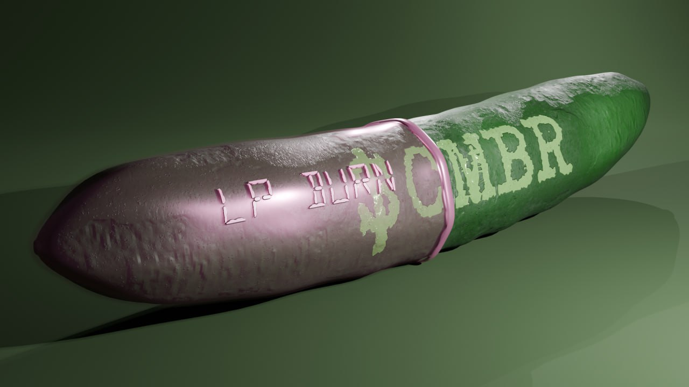

My credo in life is to prove everthing by action, not words

1
Pre-Launch
2024
The first people find out about us, we appear in the world
2024
Successful presale and achievement of the first goals
2024
The active audience of cucumbres
Launch + Future
2024
1kk+ mcap and large trading volumes
2024
The most aggreressive marceting and cooperarion with callers
2024
8 billion participants in the telegram and millions of saved cucumbers
2
Plane
Research and Planning
- Market and competitor analysis.
- Formulation of value proposition.
- Team assembly.
Design
- Development of technical documentation and selection of blockchain platform.
- Creation of token prototype.
- Legal compliance verification.The most aggreressive marceting and cooperarion with callers
Development
- Programming and testing of smart contracts.
- Conducting internal testing and security audit.
I crunching, therefore I am.
I'm just a regular fresh cucumber. They found me in the garden and then took me to the store. I was bought by some strange man in a raincoat, I ran away from him on the way to his house. I was accepted into the society of successful cucumbers and now I work for them. I have my own investment company for buying cucumbers from stores.
"For me, saving cucumbers is morxxe than a job. It's a canvas with a blank page, and I'm an artist who paints the world green."